Do cadastro do responsável à baixa da 1ª parcela da matrícula
Ele conduz você pelo fluxo completo de entrada de um aluno na escola. Siga as etapas na ordem, porque cada uma depende da anterior: o aluno precisa do responsável, a matrícula precisa do aluno e a parcela só existe depois da matrícula.
Ao final de cada etapa, confira o quadro verde Resultado esperado e anote o resultado na folha da última página. O tempo estimado é de 20 a 30 minutos.
| Item | O que você precisa |
|---|---|
| Endereço do sistema | ______________________________________ |
| Usuário e senha | Fornecidos pelo administrador do sistema |
| Navegador | Google Chrome atualizado, com a janela aberta em tamanho normal |
Estes cadastros são a base da matrícula. Apenas confira se existem; não é preciso criar nada. Se algum estiver vazio, avise o administrador antes de continuar.
| Onde olhar no menu | O que deve existir |
|---|---|
| Configuração de matrícula › Ano escolar | O ano em curso |
| Configuração de matrícula › Cursos oferecidos | Ensino Médio |
| Configuração de matrícula › Contratos | Ensino Médio - 1ª Série, do ano em curso |
| Acadêmico › Edição › Turmas | Ao menos uma turma de 1ª série do ano em curso |
O responsável é cadastrado primeiro porque, na etapa seguinte, ele é escolhido em uma lista dentro do cadastro do aluno.
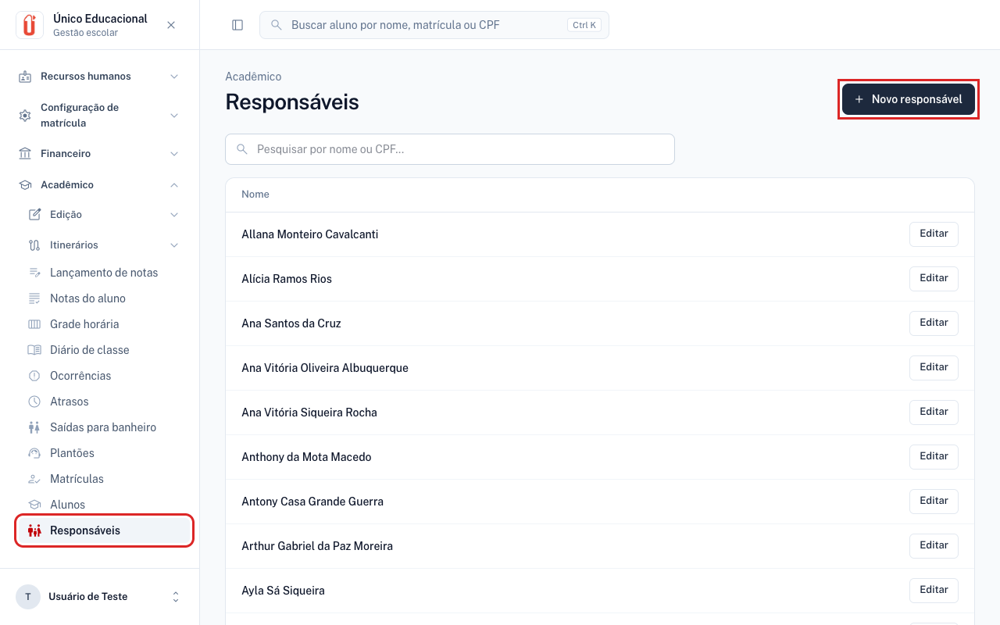
| Seção | Campo | Valor | Obrig. |
|---|---|---|---|
| Identificação | Nome civil | Maria Teste da Silva | Sim |
| Sexo | Feminino | Não | |
| Estado civil | Casado(a) | Não | |
| Documentos | CPF | 52998224725 (só números) | Sim |
| RG | 123456789 | Sim | |
| Órgão expedidor | SSP-SP | Sim | |
| Nascimento | Data de nascimento | 15/03/1980 | Não |
| Nacionalidade | Brasileira | Não | |
| Naturalidade | São Paulo - SP | Não | |
| Contato | Telefone | (11) 3333-4444 | Não |
| Celular | (11) 98888-7777 | Não | |
| maria.teste@example.com | Não | ||
| Endereço | Endereço | Rua das Flores, 100 | Não |
| Bairro | Centro | Não | |
| Cidade | São Paulo | Não | |
| UF | SP | Não | |
| CEP | 01001000 (só números) | Não |
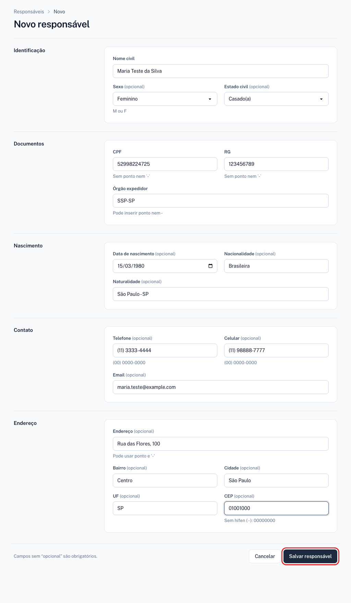
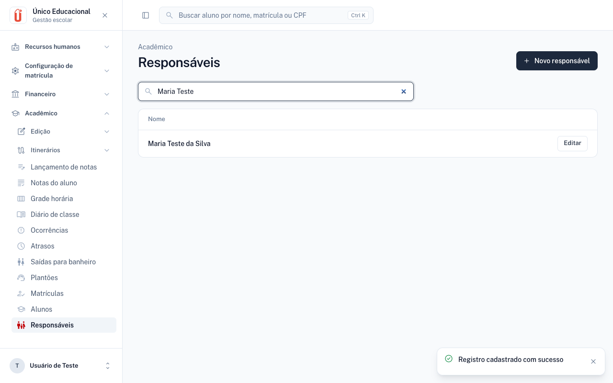
Em Novo responsável, digite o CPF com pontos (529.982.247-25) e tente salvar. O campo aceita só 11 caracteres, e o sistema deve mostrar “O CPF deve ter 11 dígitos.” abaixo do campo, já com o cursor nele. Clique em Cancelar depois de conferir.
Aqui o aluno é vinculado à responsável. O ponto mais importante é ligar Responsável financeiro: sem isso, a matrícula será recusada na etapa 3.
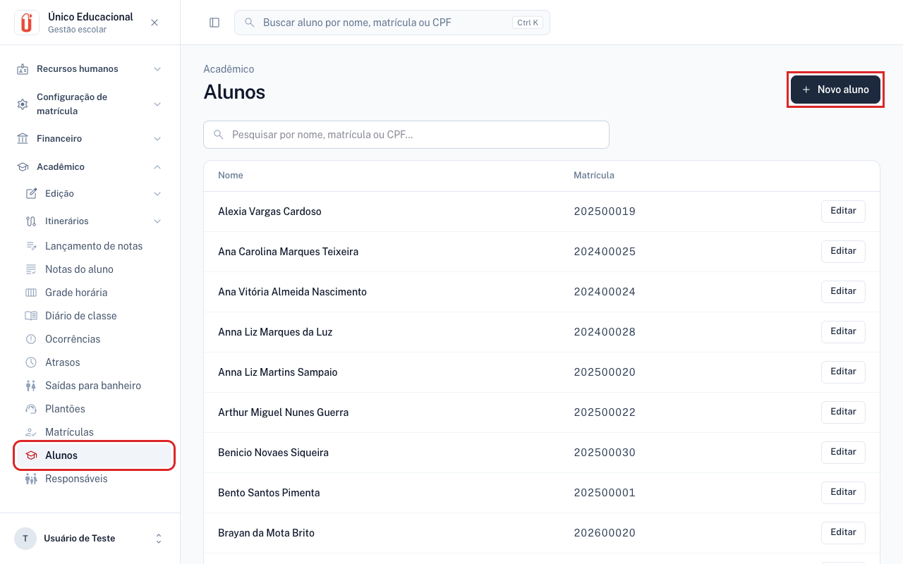
| Seção | Campo | Valor | Obrig. |
|---|---|---|---|
| Foto | Enviar foto | Deixe em branco | Não |
| Identificação | Nome civil | João Teste da Silva | Sim |
| Usar nome social | Deixe desligado (o campo Nome social só aparece com a chave ligada) | Não | |
| Sexo | Masculino | Não | |
| Documentos | CPF | 11144477735 (só números) | Sim |
| RG | 987654321 | Sim | |
| Órgão expedidor | SSP-SP | Sim | |
| Nascimento | Data de nascimento | 20/05/2011 | Não |
| Nacionalidade | Brasileira | Não | |
| Naturalidade | São Paulo - SP | Não | |
| Responsáveis | Responsável | Maria Teste da Silva (digite “Maria Teste” em Filtrar por nome) | Sim |
| Parentesco | Mãe | Sim | |
| Responsável financeiro | Ligado (necessário para matricular) | Sim* | |
| Contato principal | Ligado | Não | |
| Mora com o aluno(a) | Ligado | Não | |
| Autorizado a buscar o aluno | Ligado | Não | |
| Contato | Celular | (11) 97777-6666 | Não |
| joao.teste@example.com | Não | ||
| Endereço | Endereço | Rua das Flores, 100 | Não |
| Bairro | Centro | Não | |
| Cidade | São Paulo | Não | |
| UF | SP | Não | |
| CEP | 01001000 (só números) | Não |
* O cadastro do aluno salva sem esta chave, mas a matrícula será recusada. Para vincular a responsável, os campos Responsável e Parentesco devem ser preenchidos juntos. Se clicar em Remover por engano, clique em Desfazer: nada é apagado antes de salvar.
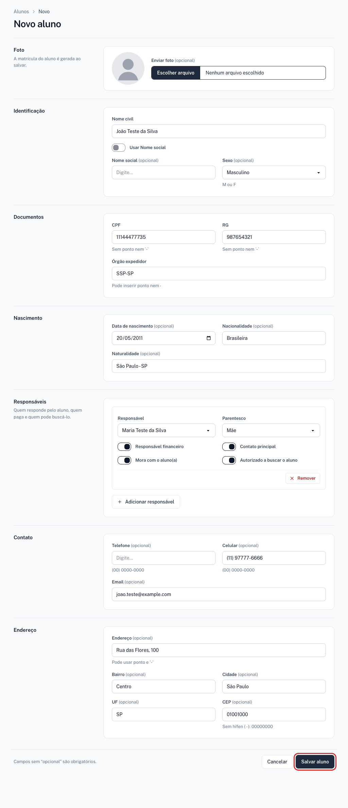
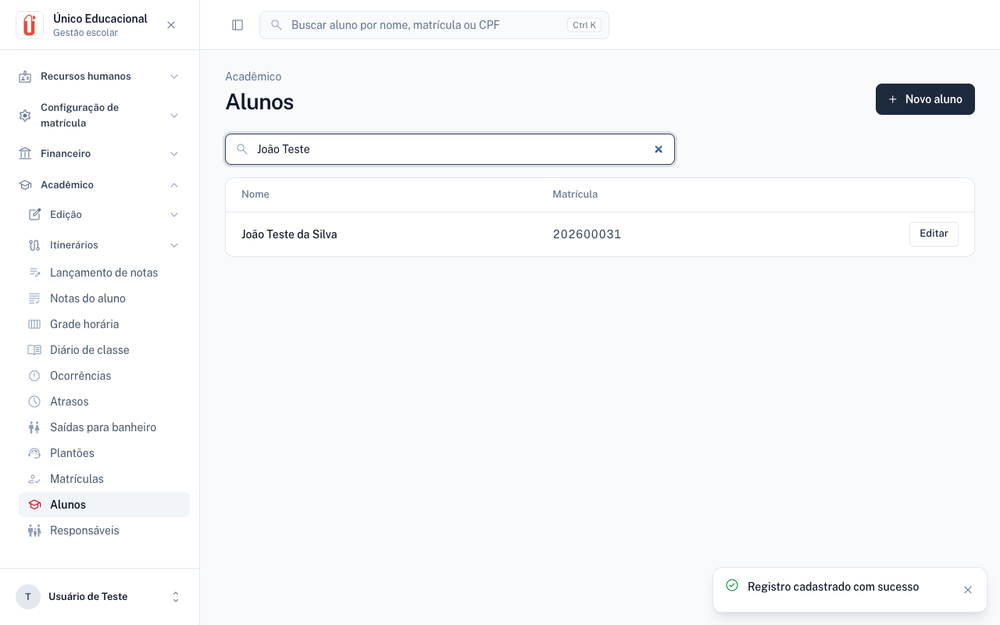
Antes de salvar, a seção Resumo da cobrança mostra o valor do contrato e as parcelas que serão geradas. Ao salvar, o sistema cria sozinho a conta a receber, essas parcelas e a lista de documentos. Nada disso é digitado.
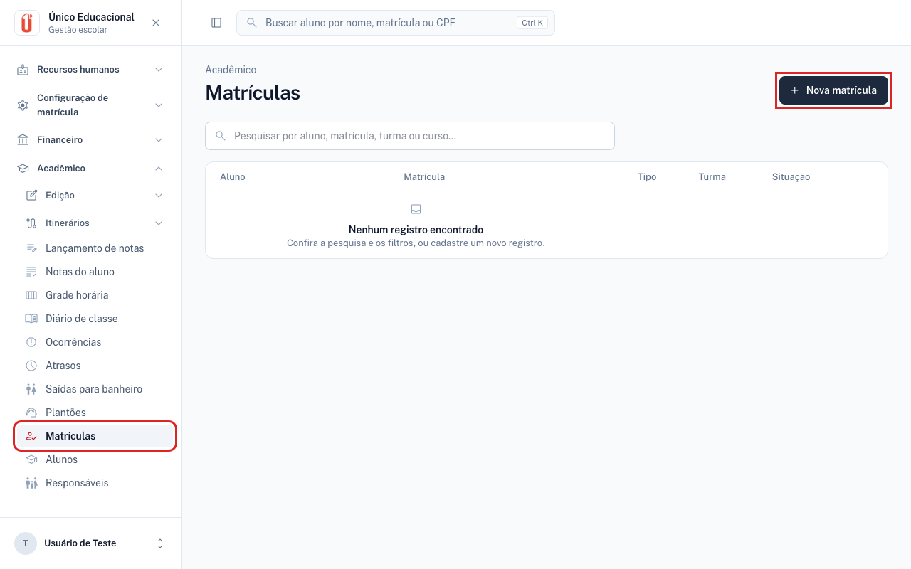
| Seção | Campo | Valor | Obrig. |
|---|---|---|---|
| Matrícula | Aluno | João Teste da Silva (digite “João Teste” em Filtrar por nome) | Sim |
| Tipo de contrato | Ensino Médio - 1ª Série - (ano em curso) | Sim | |
| Turma | Primeira turma da lista. Entre parênteses: alunos ativos / vagas | Não | |
| Situação | Ativa (já vem preenchida) | Sim | |
| Cobrança | Dia de vencimento | 10 (já vem preenchido; aceita de 1 a 28) | Sim |
| Descontos da 1ª parcela | Todos os campos | Deixe em branco | Não |
| Descontos das demais parcelas | Todos os campos | Deixe em branco | Não |
| Resumo da cobrança | Nada a preencher | Só conferir: atualiza sozinho a cada campo alterado | — |
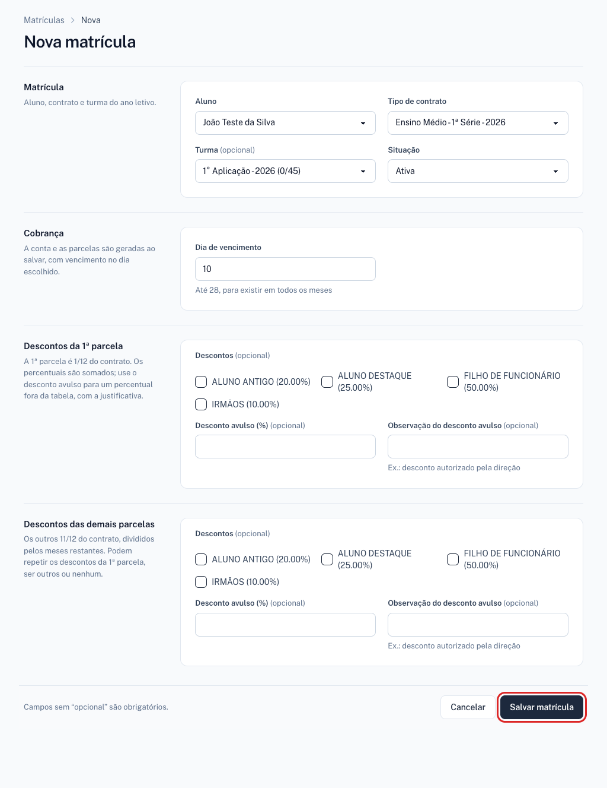
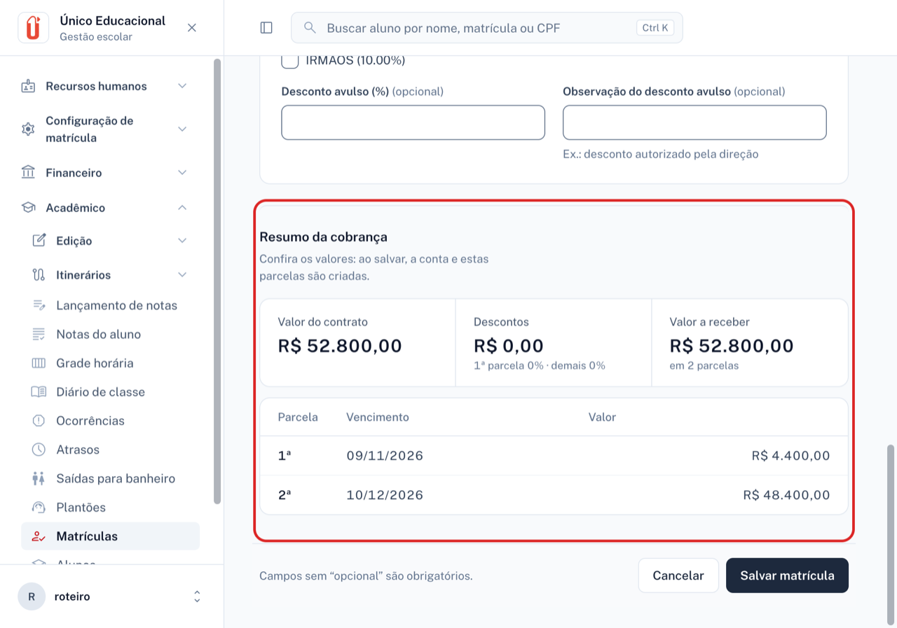
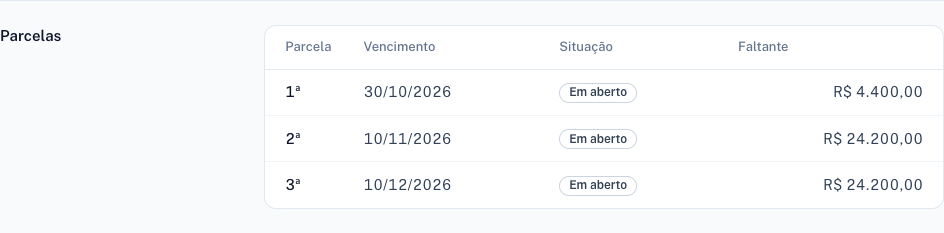
Com o contrato de R$ 52.800,00 e sem descontos, os valores dependem do mês em que você faz o teste. Eles devem ser iguais no Resumo da cobrança e na seção Parcelas depois de salvar:
| Mês da matrícula | Parcelas | 1ª parcela | Demais parcelas |
|---|---|---|---|
| Outubro | 3 | R$ 4.400,00, vencendo hoje | 2 de R$ 24.200,00 (nov. e dez.) |
| Novembro | 2 | R$ 4.400,00, vencendo hoje | 1 de R$ 48.400,00 (dez.) |
| Dezembro | 1 | R$ 52.800,00, vencendo hoje | Nenhuma |
A regra: a 1ª parcela vale 1/12 do contrato e vence no dia da matrícula. Os outros 11/12 são divididos pelos meses restantes até dezembro, no dia de vencimento escolhido. Se esse dia cair em um sábado ou domingo, o vencimento passa para a segunda-feira seguinte.
Cadastre outro aluno sem responsável financeiro (nome Pedro Sem Financeiro, CPF 12345678909, RG 555, órgão SSP) e tente matriculá-lo. O sistema deve recusar com “O aluno precisa ter ao menos um responsável financeiro cadastrado.”
“Dar baixa” é registrar no sistema que a parcela foi paga. Continue na tela Editar matrícula da etapa anterior.
Se você saiu da tela: Acadêmico › Matrículas, pesquise João Teste e clique em Editar.
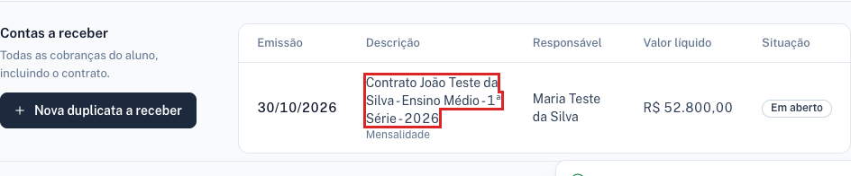
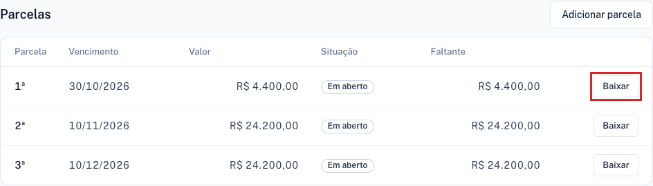
| Campo | Valor | Obrig. |
|---|---|---|
| Parcela | Já preenchida com a 1ª parcela. Não altere | Sim |
| Data do pagamento | Hoje (já preenchida) | Sim |
| Forma de pagamento | PIX (única escolha a fazer) | Sim |
| Valor pago | Saldo da parcela, já preenchido (R$ 4.400,00 no exemplo) | Sim |
| Multa, Juros, Correção | Deixe 0,00 | Sim |
| Desconto | Deixe 0,00 | Não |
| Observações | Teste de baixa da 1ª parcela | Não |
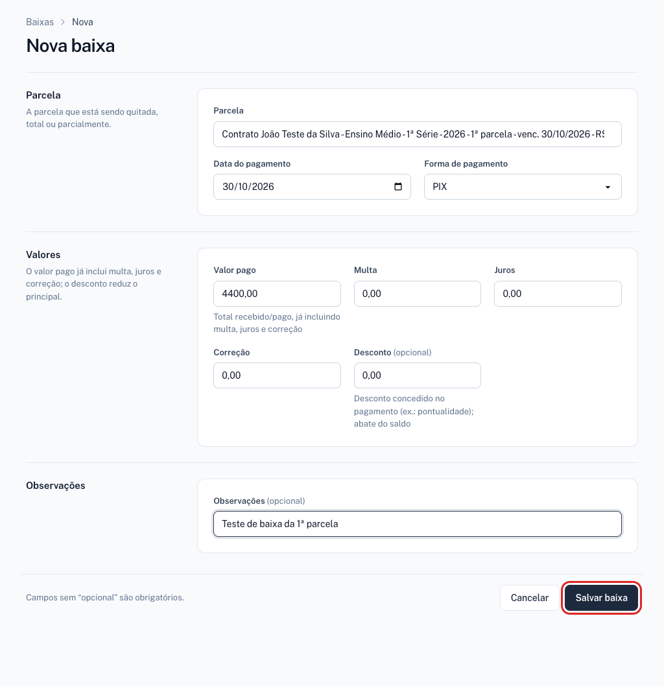
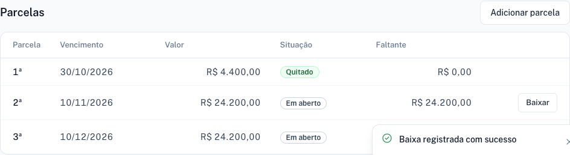
| Onde olhar | O que deve aparecer |
|---|---|
| Botão Imprimir recibo, no topo da tela da conta | Abre o recibo em uma nova aba |
| Financeiro › Parcelas, pesquisando João Teste | 1ª parcela Quitado; o quadro Recebido mostra o valor pago |
| Acadêmico › Matrículas › Editar | Seção Parcelas com a 1ª Quitado. A conta a receber segue Em aberto, pois ainda há parcelas a pagar |
Em outra parcela, clique em Baixar, altere o Valor pago para 99999, escolha PIX e tente salvar. O sistema deve recusar, com uma mensagem como “O valor principal (R$ 99999.00) excede o saldo da parcela (R$ 24200.00).” Clique em Cancelar depois de conferir.
A baixa também pode ser feita em Financeiro › Duplicatas › Baixa. No campo Parcela, digite o nome da conta ou do responsável, escolha a parcela na lista e o Valor pago é preenchido sozinho. Depois de salvar, o sistema vai para a lista de baixas, e não para a tela da conta.
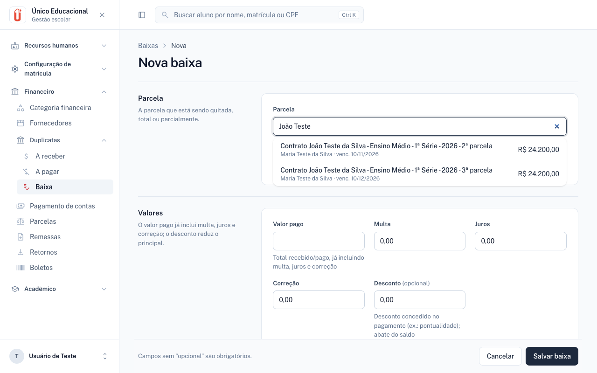
| Situação | O que fazer |
|---|---|
| “Responsável com este CPF já existe.” (ou RG) | O teste já foi feito antes com estes dados. Pesquise o nome na lista e continue com o cadastro existente, ou use outro CPF e RG. |
| Filtrar por nome não acha o nome | Confira a grafia; acentos não importam. Apague o filtro para ver a lista inteira. |
| Lista Turma vazia | Escolha o Tipo de contrato primeiro. Se continuar vazia, não há turma daquela série e ano. |
| Resumo da cobrança sem valores | Escolha o Tipo de contrato e o Dia de vencimento. Se pedir para corrigir campos, confira os descontos e o dia (de 1 a 28). |
| “Ano letivo encerrado” | O contrato é de um ano anterior. Escolha um contrato do ano em curso. |
| Campo em vermelho ao salvar | O cursor já fica no primeiro campo com erro. Leia a mensagem abaixo dele, corrija e salve de novo. Os demais dados continuam na tela. |
Testador: ______________________________ Data: ____/____/______ Versão: ____________
| # | Verificação | OK | Falhou | Observações |
|---|---|---|---|---|
| 1 | Login e acesso ao menu | |||
| 2 | Responsável salvo e encontrado na lista | |||
| 3 | Aluno salvo, com número de matrícula gerado | |||
| 4 | Responsável financeiro vinculado ao aluno | |||
| 5 | Turma filtrada pelo contrato escolhido | |||
| 6 | Resumo da cobrança com valores e vencimentos corretos | |||
| 7 | Matrícula salva, com parcelas iguais ao resumo, conta e documentos | |||
| 8 | Baixa salva, com a 1ª parcela Quitado | |||
| 9 | Demais parcelas continuam Em aberto | |||
| 10 | Recibo abre e mostra os dados corretos |
Se algo falhar, anote o número da verificação, o que você fez, o que apareceu e, se possível, tire uma captura da tela.